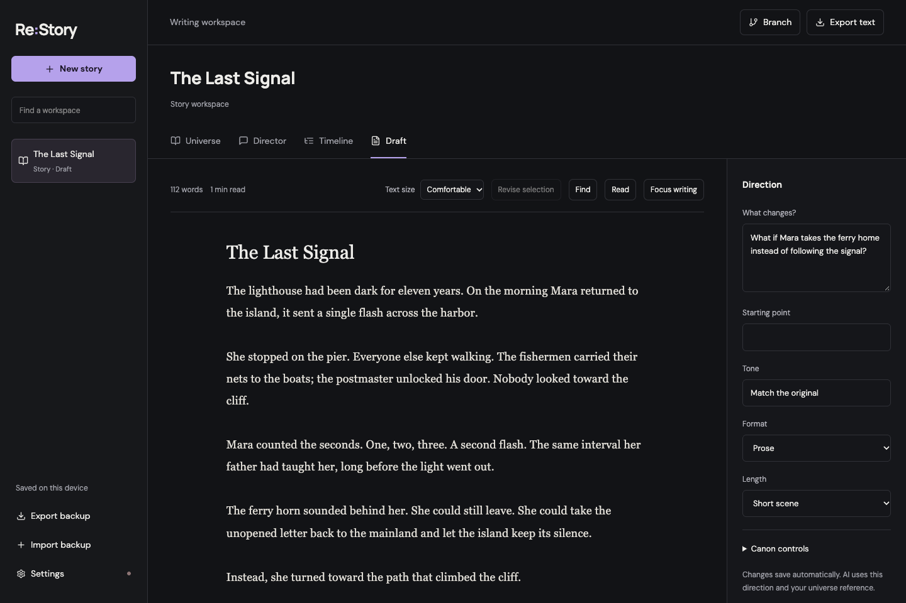

A place for the facts.
Collect world notes, characters, rules, and events. Paste your text or import a manuscript to start with what you already know.
A story studio for novels & video
Keep your world’s facts close. Write a novel, shape a storyboard, and explore another choice.
Start your story Novel drafts & storyboards now. Video generation planned.
Start with your own manuscript, a few notes, or a blank page.
FROM AN IDEA TO ITS CONSEQUENCES
A draft is a possibility. Your world’s approved facts stay separate, so you can experiment without losing what matters.
Collect world notes, characters, rules, and events. Paste your text or import a manuscript to start with what you already know.
Plan an alternate timeline. Create a branch and try a different outcome while keeping the original draft close.
Write in focus mode, review passage replacements, and return to earlier revisions. Export your work when you’re ready.
ROOM TO THINK
Write, revise, organize, and branch your story yourself. When AI is connected, the Director can discuss consequences, suggest timelines, and help revise selected passages.
Novel and storyboard generation uses Gemini. Veo video generation is planned and is not available yet.
Work saves in the current browser. Export a backup to keep a separate copy or move between devices.